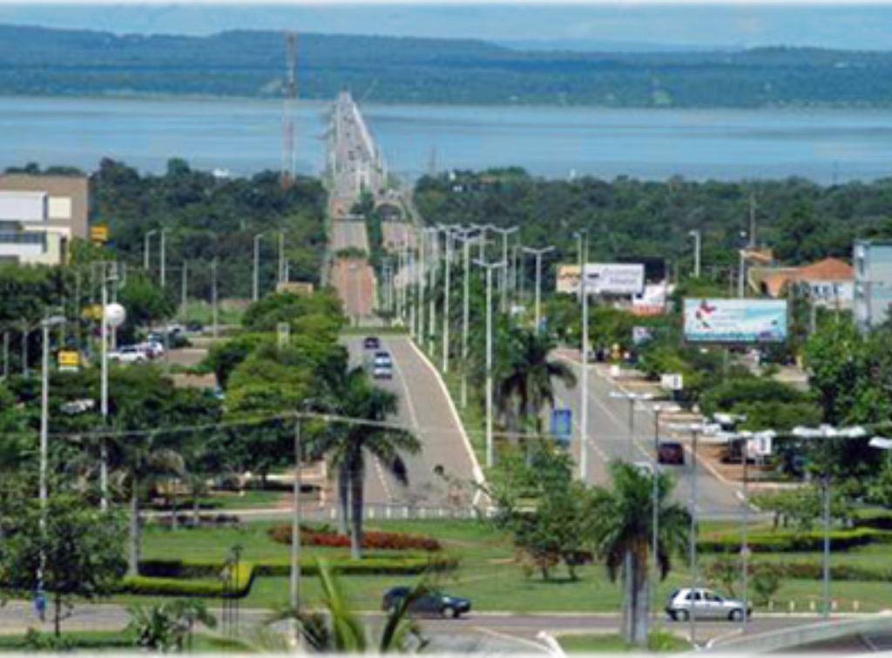

Tocantins é um estado localizado na Região Norte do Brasil, sendo o mais novo do país, criado em 1988 a partir da divisão do estado de Goiás. Sua capital é Palmas, uma das capitais mais planejadas do Brasil. O estado apresenta áreas de transição entre a Floresta Amazônica e o Cerrado, com clima tropical, temperaturas elevadas e duas estações bem definidas: uma chuvosa e outra seca. A economia de Tocantins é baseada principalmente na agropecuária, na agricultura e no comércio. O estado destaca-se na produção de soja, milho, arroz e na criação de gado bovino. Além disso, o Rio Tocantins possui grande importância para a geração de energia elétrica e para o transporte na região. O turismo também cresce devido às belezas naturais, como rios, cachoeiras e praias de água doce.
